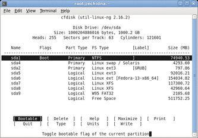
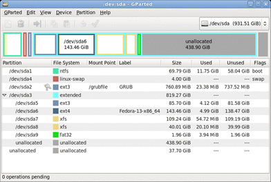

Из этой статьи вы узнаете о дисковых разделах и файловых системах Linux. Вы научитесь:
Эта статья поможет вам подготовиться к сдаче экзамена LPI 101 на администратора начального уровня (LPIC-1) и содержит материалы цели 104.1 темы 104. Цель имеет вес 2.
Чтобы извлечь наибольшую пользу из наших статей, необходимо обладать базовыми знаниями о Linux и иметь работоспособный компьютер с Linux, на котором можно будет выполнять все встречающиеся команды. Иногда различные версии программ выводят результаты по-разному, поэтому содержимое листингов и рисунков может отличаться от того, что вы увидите на вашем компьютере.
Также вы должны быть знакомы с материалом статьи "Изучаем Linux, 101: разметка жесткого диска".
В нашей статье "Изучаем Linux, 101: разметка жесткого диска" мы познакомили вас с такими понятиями, как разметка и разделы жесткого диска, а также привели несколько примеров использования команды fdisk для просмотра информации о разделах. Вы узнали о разделах, включая основные,расширенные и логические разделы, а также о том, что файловая система Linux состоит из файлов, хранящихся вдиректориях на жестком диске или другом блочном устройстве хранения. Как и во многих других операционных системах, директории в Linux могут содержать в себе другие директории, называемые поддиректориями. В статье также были изложены некоторые соображения, которыми можно руководствоваться при создании разделов на жестком диске.
Мы начнем нашу статью с обзора блочных устройств и разделов, а затем более подробно расскажем о команде fdisk, которая используется для создания, модификации или удаления разделов на блочных устройствах. Также вы узнаете о многочисленных формах команды mkfs (сокращение от make filesystem – создать файловую систему); команды mkfsиспользуются для форматирования разделов в файловой системе определенного типа.
Примечание. Помимо инструментов и файловых систем, требующихся для сдачи экзаменов LPI в статье могут упоминаться другие утилиты и файловые системы. Краткий обзор некоторых из них вы можете найти в разделе "Другие инструменты и файловые системы".
Блочное устройство представляет собой уровень абстракции любого устройства хранения, которое может быть отформатировано в блоках фиксированного размера; доступ к отдельным блокам осуществляется независимо от доступа к другим блокам. Такой доступ часто называют произвольным доступом.
Представление устройств в виде абстрагированных блоков фиксированного размера с произвольным доступом позволяет программам использовать их, не заботясь о том, чем на самом деле является то или иное устройство; это может быть жесткий диск, дискета, компакт-диск, твердотельный диск, сетевой диск или какое-то виртуальное устройство, например, файловая система в оперативной памяти.
Примерами блочных устройств могут являться первый IDE-диск (/dev/sda или /dev/hda) или второй SCSI-, IDE- или USB-диск (/dev/sdb) вашего компьютера. Для просмотра содержимого директории /dev используйте команду ls -l. Первым символом в каждой строке может быть либо символ b, означающий блочное (block) устройство, например, дискету, компакт-диск, жесткий диск IDE или SCSI, либо символ c, означающий символьное (character) устройство, например терминал (tty) или фиктивное (null) устройство. Некоторые примеры приведены в листинге 1.
Листинг 1. Блочные и символьные устройства Linux
|
[ian@echidna ~]$ ls -l /dev/loop1 /dev/null /dev/sd[ab] /dev/sr0 /dev/tty0 brw-rw----. 1 root disk 7, 1 2010-06-14 07:25 /dev/loop1 crw-rw-rw-. 1 root root 1, 3 2010-06-14 07:25 /dev/null brw-rw----. 1 root disk 8, 0 2010-06-14 07:25 /dev/sda brw-rw----. 1 root disk 8, 16 2010-06-14 07:25 /dev/sdb brw-rw----+ 1 root cdrom 11, 0 2010-06-14 07:25 /dev/sr0 crw--w----. 1 root root 4, 0 2010-06-14 07:25 /dev/tty0 |
Для некоторых блочных устройств, таких как дискеты, CD- и DVD-диски, принято использовать одну файловую систему на всем носителе. Однако для больших жестких дисков и даже для USB-накопителей все доступное пространство часто делится (или разбивается) на несколько отдельных разделов.
Разделы могут отличаться по размеру, а каждый раздел может иметь свою файловую систему; таким образом, один диск может использоваться для различных целей, включая его совместное использование разными операционными системами. Например, на моих тестовых компьютерах установлено несколько различных дистрибутивов Linux (а иногда и операционная система Windows®), совместно использоующих один или два жестких диска.
Из нашей статьи "Изучаем Linux, 101: разметка жесткого диска" вы узнали, что жесткие диски имеют геометрию, которая описывается такими терминами как цилиндры, головки и секторы. Несмотря на то, что в современных жестких дисках используется логическая адресация блоков (Logical Block Addressing, LBA), которая в значительной степени скрывает геометрию, основной единицей размещения, используемой для разметки диска, обычно остается цилиндр.
Получение информации о разделах
Информация о разделах хранится на диске в таблице разделов. В этой таблице содержится информация о начале и конце каждого раздела, о его типе, а также о том, является ли раздел загрузочным или нет. Чтобы создать или удалить раздел, необходимо отредактировать таблицу разделов с помощью специальной программы. Для успешной сдачи экзамена LPI вам необходимо знать о программе fdisk, поэтому в этой статье рассматривается именно она, хотя существуют и другие инструменты, которые вы можете использовать. О некоторых из них мы расскажем в конце статьи.
Команда fdisk с опцией –l выводит на экран список разделов. Если вам требуется просмотреть все разделы на определенном диске, то добавьте имя устройства, например, /dev/sda. Обратите внимание на то, что для использования инструментов по работе с разделами вы должны обладать привилегиями пользователя root. В листинге 2 показаны списки разделов основных жестких дисков, установленных на двух моих компьютерах.
Листинг 2. Просмотр разделов с помощью fdisk
|
[root@attic4 ~]# fdisk -l /dev/sda Disk /dev/sda: 640.1 GB, 640135028736 bytes 255 heads, 63 sectors/track, 77825 cylinders Units = cylinders of 16065 * 512 = 8225280 bytes Sector size (logical/physical): 512 bytes / 512 bytes I/O size (minimum/optimal): 512 bytes / 512 bytes Disk identifier: 0x00064a1a Device Boot Start End Blocks Id System /dev/sda1 1 127 1020096 83 Linux /dev/sda2 128 1402 10241437+ 82 Linux swap / Solaris /dev/sda3 * 46340 56538 81920000 83 Linux /dev/sda4 1403 46339 360956422 5 Extended /dev/sda5 1403 10420 72437053+ 83 Linux /dev/sda6 10421 19344 71681998+ 83 Linux /dev/sda7 19345 28350 72340663+ 83 Linux /dev/sda8 28351 37354 72324598+ 83 Linux /dev/sda9 37355 46339 72171981 83 Linux Partition table entries are not in disk order [root@echidna ~]# fdisk -l /dev/sda Disk /dev/sda: 1000.2 GB, 1000204886016 bytes 255 heads, 63 sectors/track, 121601 cylinders Units = cylinders of 16065 * 512 = 8225280 bytes Disk identifier: 0x000de20f Device Boot Start End Blocks Id System /dev/sda1 * 1 9111 73184076 7 HPFS/NTFS /dev/sda2 9634 9730 779152+ 83 Linux /dev/sda3 9731 116679 859067842+ 5 Extended /dev/sda5 9731 20917 89859546 83 Linux /dev/sda6 20918 39644 150424596 83 Linux /dev/sda7 39645 53905 114551451 83 Linux
|
Примечания:
Работа с разделами с использованием команды fdisk
Вы только что узнали, как можно получить информацию о разделах диска с помощью команды fdisk. Эта команда также содержит систему меню для редактирования таблицы разделов (т. е. для создания или удаления разделов).
Прежде чем приступить к работе с разделами, запомните несколько важных правил. Если пренебрегать этими правилам, то можно потерять все имеющиеся данные.
Для запуска команды fdisk в интерактивном режиме просто укажите в качестве параметра имя диска, например /dev/hda или /dev/sdb. В следующем примере выполняется загрузка Live-DVD дистрибутива Knoppix. Вы должны обладать привилегиями пользователя root, чтобы увидеть вывод, аналогичный выводу в листинге 3.
Листинг 3. Запуск fdisk в интерактивном режиме
|
knoppix@Microknoppix:~$ su - root@Microknoppix:~# fdisk /dev/sda The number of cylinders for this disk is set to 121601. There is nothing wrong with that, but this is larger than 1024, and could in certain setups cause problems with: 1) software that runs at boot time (e.g., old versions of LILO) 2) booting and partitioning software from other OSs (e.g., DOS FDISK, OS/2 FDISK) Command (m for help): |
Большинство современных дисков имеют более 1024 цилиндров, поэтому обычно вы будете получать предупреждение, показанное в листинге 3. Чтобы вывести список доступных односимвольных команд, наберите m, как показано в листинге 4.
Листинг 4. Встроенная справка команды fdisk
|
Command (m for help): m Command action a toggle a bootable flag b edit bsd disklabel c toggle the dos compatibility flag d delete a partition l list known partition types m print this menu n add a new partition o create a new empty DOS partition table p print the partition table q quit without saving changes s create a new empty Sun disklabel t change a partition's system id u change display/entry units v verify the partition table w write table to disk and exit x extra functionality (experts only) Command (m for help): |
Для вывода информации о разделах выбранного диска используйте команду p; ее вывод показан в листинге 5.
Листинг 5. Просмотр информации о существующей таблице разделов
|
Command (m for help): p Disk /dev/sda: 1000.2 GB, 1000204886016 bytes 255 heads, 63 sectors/track, 121601 cylinders Units = cylinders of 16065 * 512 = 8225280 bytes Disk identifier: 0x000de20f Device Boot Start End Blocks Id System /dev/sda1 * 1 9111 73184076 7 HPFS/NTFS /dev/sda2 9634 9730 779152+ 83 Linux /dev/sda3 9731 116679 859067842+ 5 Extended /dev/sda5 9731 20917 89859546 83 Linux /dev/sda6 20918 39644 150424596 83 Linux /dev/sda7 39645 53905 114551451 83 Linux Command (m for help): |
Объем этого диска составляет 1 ТБ, на нем имеется раздел Windows/XP, занимающий чуть меньше 80 ГБ. Это основной раздел, и он помечен как загрузочный, что характерно для Windows-системы.
Теперь используем часть свободного дискового пространства для добавления нескольких разделов.
Давайте приступим и выполним команду n для создания нового раздела, как показано в листинге 6.
Листинг 6. Создание первого раздела
|
Command (m for help): n Command action l logical (5 or over) p primary partition (1-4) p Selected partition 4 First cylinder (9112-121601, default 9112): Using default value 9112 Last cylinder, +cylinders or +size{K,M,G} (9112-9633, default 9633): +521 Command (m for help): p Disk /dev/sda: 1000.2 GB, 1000204886016 bytes 255 heads, 63 sectors/track, 121601 cylinders Units = cylinders of 16065 * 512 = 8225280 bytes Disk identifier: 0x000de20f Device Boot Start End Blocks Id System /dev/sda1 * 1 9111 73184076 7 HPFS/NTFS /dev/sda2 9634 9730 779152+ 83 Linux /dev/sda3 9731 116679 859067842+ 5 Extended /dev/sda4 9112 9633 4192965 83 Linux /dev/sda5 9731 20917 89859546 83 Linux /dev/sda6 20918 39644 150424596 83 Linux /dev/sda7 39645 53905 114551451 83 Linux Partition table entries are not in disk order Command (m for help): |
Мы взяли значение по умолчанию для первого цилиндра и указали значение +521 (количество цилиндров). Из листинга 6 видно, что размер нашего раздела составляет приблизительно 4 ГБ. Поскольку это основной раздел, он должен иметь номер от 1 до 4. Мы рекомендуем всегда нумеровать разделы последовательно; если этого не делать, то некоторые утилиты будут выдавать предупреждения, в частности, команда fdisk предупреждает о том, что записи в таблице разделов больше не соответствуют последовательности дисков.
Заметьте также, что новый раздел имеет тип 83, т. е. является Linux-разделом для хранения данных. Тип раздела можно рассматривать как метку, которая указывает операционной системе на его предполагаемое назначение. В конечном счете указанный тип должен совпадать с предполагаемым использованием этого раздела, но пока мы даже не будем форматировать его, не говоря уже о размещении на нем данных. Сначала мы создадим несколько других разделов, а затем посмотрим, как можно изменить тип раздела.
Вы могли заметить, что при вводе подкоманды n для создания нового раздела можно было выбрать один из двух вариантов: 'l' для создания логического раздела и 'p' – для создания основного. Это обусловлено тем, что в списке присутствуют только оставшиеся доступные типы разделов. Если бы диск еще не имел расширенного раздела, вы могли бы увидеть в списке опцию 'e', предназначенную для создания раздела этого типа. Также обратите внимание на то, что наш расширенный раздел (/dev/sda3) имеет тип 5.
Теперь создадим Linux-раздел объемом 40 ГБ и FAT32-раздел объемом 2000 МБ. На этот раз мы просто укажем значения +40G и +2000M, означающие размеры в 40 ГБ и 2000 МБ, соответственно. Вычисление количества цилиндров мы предоставим программе fdisk. Результаты представлены в листинге 7.
Листинг 7. Создание разделов для хранения данных
|
Command (m for help): n First cylinder (53906-116679, default 53906): Using default value 53906 Last cylinder, +cylinders or +size{K,M,G} (53906-116679, default 116679): +40G Command (m for help): n First cylinder (59129-116679, default 59129): Using default value 59129 Last cylinder, +cylinders or +size{K,M,G} (59129-116679, default 116679): +2000M Command (m for help): p Disk /dev/sda: 1000.2 GB, 1000204886016 bytes 255 heads, 63 sectors/track, 121601 cylinders Units = cylinders of 16065 * 512 = 8225280 bytes Disk identifier: 0x000de20f Device Boot Start End Blocks Id System /dev/sda1 * 1 9111 73184076 7 HPFS/NTFS /dev/sda2 9634 9730 779152+ 83 Linux /dev/sda3 9731 116679 859067842+ 5 Extended /dev/sda4 9112 9633 4192965 83 Linux /dev/sda5 9731 20917 89859546 83 Linux /dev/sda6 20918 39644 150424596 83 Linux /dev/sda7 39645 53905 114551451 83 Linux /dev/sda8 53906 59128 41953716 83 Linux /dev/sda9 59129 59384 2056288+ 83 Linux Partition table entries are not in disk order Command (m for help): |
Прежде чем завершить работу с программой fdisk, мы изменим типы наших разделов, предназначенных для области подкачки (swap) и файловой системы FAT32 (vfat). Это делается с помощью подкоманды t, предназначенной для изменения типа раздела. Для раздела /dev/sda4 мы укажем тип 82 (область подкачки Linux), а для раздела /dev/sda9 – тип 9 (файловая система FAT32). Чтобы увидеть полный список поддерживаемых типов, нажмите L, как показано в листинге 8.
Листинг 8. Изменение типов раздела
|
Command (m for help): t Partition number (1-9): 4 Hex code (type L to list codes): 82 Changed system type of partition 4 to 82 (Linux swap / Solaris) Command (m for help): t Partition number (1-9): 9 Hex code (type L to list codes): b Changed system type of partition 9 to b (W95 FAT32) Command (m for help): |
До сих пор мы просто вносили изменения в таблицу разделов в оперативной памяти. Мы в любой момент могли завершить работу без сохранения изменений с помощью команды q. Если вы хотите что-то изменить, вы можете выполнить команду d для удаления одного или нескольких разделов, а затем создать их заново. Если конфигурация вас устраивает, выполните команду v для контрольной проверки конфигурации, а затем команду w для записи изменений в таблицу разделов и выхода из программы (см. листинг 9). Если вы снова запустите команду fdisk -l, вы увидите, что теперь Linux знает обо всех новых разделах. В отличие от некоторых операционных систем, для начала работы с новыми значениями таблицы разделов перезагрузка компьютера не требуется. Перезагрузка может потребоваться, например, в том случае, если раздел /dev/hda3 становится разделом /dev/hda2 по причине удаления последнего. Если перезагрузка необходима, то fdisk сообщит от этом.
Листинг 9. Сохранение таблицы разделов
|
Command (m for help): v 999521580 unallocated 512-byte sectors Command (m for help): w The partition table has been altered! Calling ioctl() to re-read partition table. WARNING: If you have created or modified any DOS 6.x partitions, please see the fdisk manual page for additional information. Syncing disks. root@Microknoppix:~# fdisk -l /dev/sda Disk /dev/sda: 1000.2 GB, 1000204886016 bytes 255 heads, 63 sectors/track, 121601 cylinders Units = cylinders of 16065 * 512 = 8225280 bytes Disk identifier: 0x000de20f Device Boot Start End Blocks Id System /dev/sda1 * 1 9111 73184076 7 HPFS/NTFS /dev/sda2 9634 9730 779152+ 83 Linux /dev/sda3 9731 116679 859067842+ 5 Extended /dev/sda4 9112 9633 4192965 82 Linux swap / Solaris /dev/sda5 9731 20917 89859546 83 Linux /dev/sda6 20918 39644 150424596 83 Linux /dev/sda7 39645 53905 114551451 83 Linux /dev/sda8 53906 59128 41953716 83 Linux /dev/sda9 59129 59384 2056288+ b W95 FAT32 Partition table entries are not in disk order |
Дополнительная информация о команде fdisk
Вы могли заметить, что мы не трогали флаг загрузки ни одного раздела. Наш диск по-прежнему имеет главную загрузочную запись Windows (MBR) и, следовательно, компьютер будет загружаться с первого основного раздела, помеченного в качестве загрузочного (в нашем примере это раздел NTFS).
Ни LILO, ни GRUB, не используют флаг загрузки. Если в MBR установлен один из этих загрузчиков, можно загружать компьютер с раздела Windows/XP. Можно также установить LILO или GRUB в раздел /boot (устройство /dev/hda2), пометить этот раздел как загрузочный и удалить флаг загрузки раздела /dev/hda1. Если в дальнейшем на компьютере планируется использовать только ОС Windows, то лучше оставить исходную запись MBR.
При необходимости команду fdisk можно использовать для изменения очередности разделов в таблице разделов. Обычно при этом изменяются номера разделов, поэтому для восстановления работоспособности системы может потребоваться дополнительная работа. Чтобы внести изменения, переключитесь с помощью подкоманды f в режим эксперта, а затем используйте подкоманду f для изменения очередности разделов, как показано в листинге 10. Если вы не хотите сохранять изменения и обновлять таблицу разделов, то выполните подкоманду q для выхода без сохранения, как это было сделано в предыдущем примере.
Листинг 10. Исправление очередности разделов в таблице разделов
|
Command (m for help): p Disk /dev/sda: 1000.2 GB, 1000204886016 bytes 255 heads, 63 sectors/track, 121601 cylinders Units = cylinders of 16065 * 512 = 8225280 bytes Disk identifier: 0x000de20f Device Boot Start End Blocks Id System /dev/sda1 * 1 9111 73184076 7 HPFS/NTFS /dev/sda2 9634 9730 779152+ 83 Linux /dev/sda3 9731 116679 859067842+ 5 Extended /dev/sda4 9112 9633 4192965 82 Linux swap / Solaris /dev/sda5 9731 20917 89859546 83 Linux /dev/sda6 20918 39644 150424596 83 Linux /dev/sda7 39645 53905 114551451 83 Linux /dev/sda8 53906 59128 41953716 83 Linux /dev/sda9 59129 59384 2056288+ b W95 FAT32 Partition table entries are not in disk order Command (m for help): x Expert command (m for help): f Done. Expert command (m for help): r Command (m for help): p Disk /dev/sda: 1000.2 GB, 1000204886016 bytes 255 heads, 63 sectors/track, 121601 cylinders Units = cylinders of 16065 * 512 = 8225280 bytes Disk identifier: 0x000de20f Device Boot Start End Blocks Id System /dev/sda1 * 1 9111 73184076 7 HPFS/NTFS /dev/sda2 9112 9633 4192965 82 Linux swap / Solaris /dev/sda3 9634 9730 779152+ 83 Linux /dev/sda4 9731 116679 859067842+ 5 Extended /dev/sda5 9731 20917 89859546 83 Linux /dev/sda6 20918 39644 150424596 83 Linux /dev/sda7 39645 53905 114551451 83 Linux /dev/sda8 53906 59128 41953716 83 Linux /dev/sda9 59129 59384 2056288+ b W95 FAT32 Command (m for help): q |
Вы познакомились с одним из способов добавления разделов на компьютере под управлением Linux. С другими способами вы можете познакомиться в статье "Изучаем Linux, 101: поиск и правильное размещение системных файлов".
Linux поддерживает несколько различных файловых систем. Каждая из них имеет свои достоинства, недостатки и особенности. Важным отличительным свойством файловой системы является журналирование, позволяющее быстрее восстановить систему после сбоя. Как правило, если есть выбор, то лучше использовать журналируемую файловую систему. Также при выборе файловой системы вы можете обратить внимание на поддержку расширения Security Enhanced Linux (или SELinux) – Linux с улучшенной безопасностью. Далее мы кратко рассмотрим типы файловых систем, о которых необходимо знать на экзамене LPI. Дополнительную информацию вы можете найти в разделеРесурсы.
Файловая система ext2 (также известная как second extended filesystem – вторая расширенная файловая система) была разработана для устранения недостатков файловой системы Minix, использовавшейся в ранних версиях Linux. Она широко использовалась в Linux на протяжении многих лет. Файловая система ext2 не является журналируемой, и в настоящее время ей на смену пришла файловая система ext3.
Файловая система ext3 дополняет стандартную систему ext2 возможностями журналирования и поэтому является эволюционным развитием очень стабильной файловой системы. Она обладает достаточной производительностью в большинстве ситуаций и в настоящее время продолжает совершенствоваться. Поскольку эта файловая система основана на проверенной временем системе ext2, то можно преобразовывать существующую файловую систему ext2 в ext3 и обратно в случае возникновения необходимости.
ReiserFS – это файловая система на основе B-дерева, обладающая очень хорошей общей производительностью, в особенности при использовании большого числа маленьких файлов. Файловая система ReiserFS хорошо масштабируется и является журналируемой. Сейчас новые версии ReiserFS не разрабатываются, она не поддерживает возможности SELinux, и ей на смену пришла файловая система Reiser4.
XFS – журналируемая файловая система, обладающая надежной функциональностью и оптимизированная для масштабирования. XFS активно кэширует в ОЗУ передаваемые данные, поэтому при ее использовании рекомендуется подключить компьютер к источнику бесперебойного питания.
Файловая система раздела подкачки
Дисковое пространство, выделенное под раздел подкачки, должно быть соответствующим образом отформатировано, но, как правило, раздел подкачки не рассматривается в качестве файловой системы.
Эта файловая система (также известная как FAT32) не является журналируемой и не обладает многими возможностями, необходимыми для полноценной работы с файловыми системами в Linux. Полезное свойство FAT32 состоит в том, что эта файловая система может быть доступна как из Windows, так и из Linux, что делает ее подходящей для обмена данными между этими операционными системами. Не используйте эту файловую систему в Linux, если только вы не планируете организовывать обмен данными между Windows и Linux. Если распаковать gzip- или tar-архив Linux на диск с файловой системой vfat, то будут потеряны все файловые разрешения, например, разрешения на исполнение, а также все символические ссылки, которые могли храниться в архиве.
Файловая система ext3 является сформировавшейся и стабильной файловой системой, и используется по умолчанию в ряде дистрибутивов Linux. Файловая система ReiserFS на протяжении многих лет использовалась по умолчанию в некоторых дистрибутивах, включая SUSE, но на сегодняшний день она используется не так широко.
Для создания файловых систем в Linux используется команда mkfs, а для создания области подкачки – команда mkswap. Фактически команда mkfs представляет собой внешний интерфейс к нескольким командам для работы с файловой системой, таким как mkfs.ext3 для ext3 и mkfs.reiserfs – для ReiserFS.
Чтобы узнать, какие файловые системы поддерживаются вашей системой, используйте команду ls /sbin/mk*. Пример приведен в листинге 11.
Листинг 11. Команды для создания файловых систем
|
[ian@echidna ~]$ ls /sbin/mk* /sbin/mkdosfs /sbin/mkfs.ext2 /sbin/mkfs.ntfs /sbin/mke2fs /sbin/mkfs.ext3 /sbin/mkfs.vfat /sbin/mkfs /sbin/mkfs.ext4 /sbin/mkfs.xfs /sbin/mkfs.btrfs /sbin/mkfs.ext4dev /sbin/mkhomedir_helper /sbin/mkfs.cramfs /sbin/mkfs.msdos /sbin/mkswap |
В дальнейшем вы познакомитесь с различными формами некоторых команд. Например, вы увидите, что команды mke2fs, mkfs.ext2 и mkfs.ext3 являются идентичными, так же как и mkreiserfs и mkfs.reiserfs. Файловые системы, которые могут оказаться необходимыми для загрузки системы, используют несколько идентичных файлов с разными именами. В файловых системах, которые нельзя использовать в Linux для корневой файловой системы / (например, vfat или msdos), могут использоваться символические ссылки на эти файлы.
Существует несколько общих опций для всех команд mkfs. Опции, специфичные для создаваемой файловой системы, передаются соответствующей команде в зависимости от типа файловой системы, указанному в опции -type. В наших примерах используется команда mkfs -type, но можно использовать и другие равнозначные формы этой команды. Например, можно использовать форму mkfs -type ext2, mk2fs или mkfs.ext2. Для вызова справочных man-страниц по какой-либо определенной файловой системе используйте в качестве имени соответствующую команду mkfs, например, man mkfs.ext3. Многие значения, выводимые в наших следующих примерах, могут управляться различными опциями mkfs.
Теперь, когда все наши разделы созданы, мы загрузим операционную систему Fedora 12 (вместо более медленного дистрибутива Knoppix, загружаемого с Live-DVD) и отформатируем их в файловых системах. Конечно, вы можете продолжать работать в Knoppix, если захотите. Помните о том, что для создания файловых систем необходимо обладать привилегиями пользователя root.
Создание файловой системы ext3
Давайте отформатируем раздел /dev/sda8 в файловой системе ext3 с помощью команды mkfs, как показано в листинге 12.
Листинг 12. Создание файловой системы ext3
|
[root@echidna ~]# mkfs -t ext3 /dev/sda8 mke2fs 1.41.9 (22-Aug-2009) Filesystem label= OS type: Linux Block size=4096 (log=2) Fragment size=4096 (log=2) 2624496 inodes, 10488429 blocks 524421 blocks (5.00%) reserved for the super user First data block=0 Maximum filesystem blocks=4294967296 321 block groups 32768 blocks per group, 32768 fragments per group 8176 inodes per group Superblock backups stored on blocks: 32768, 98304, 163840, 229376, 294912, 819200, 884736, 1605632, 2654208, 4096000, 7962624 Writing inode tables: done Creating journal (32768 blocks): done Writing superblocks and filesystem accounting information: done This filesystem will be automatically checked every 20 mounts or 180 days, whichever comes first. Use tune2fs -c or -i to override. |
Обратите внимание на то, что для файловой системы ext3 был создан журнал. Если вы хотите добавить журнал к существующей файловой системе ext2, то используйте для этого команду tune2fs с опцией -j.
Полезная опция, используемая для файловых систем ext2 и ext3 – это опция -L с именем, которое будет присвоено разделу в качестве метки. Эту метку можно использовать вместо имени устройства при монтировании файловой системы; при внесении определенных изменений, которые также необходимо отражать в управляющих файлах, метка позволяет изолировать имя устройства, которому она фактически соответствует. Для просмотра существующей метки файловой системы ext2 или ext3 или создания новой используется команда e2label. Длина метки ограничена 16 символами.
Одним из последних нововведений является универсальный уникальный идентификатор (Universally Unique Identifier, UUID), который используется вместо метки. UUID – это 128-битовый идентификатор, обычно отображаемый в виде 32 шестнадцатеричных цифр, разделенных дефисами. Для большинства файловых систем Linux UUID генерируется автоматически при их форматировании. Для просмотра UUID раздела, который мы только что отформатировали, используйте команду blkid (ее можно запустить без прав суперпользователя), как показано в листинге 13. Идентификаторы UUID обладают большей уникальностью по сравнению с метками и особенно полезны при использовании устройств с горячей заменой, например, USB-накопителей.
Листинг 13. Просмотр идентификатора UUID с помощью blkid
|
[ian@echidna ~]$ blkid /dev/sda8 /dev/sda8: UUID="87040def-920e-4525-9c81-c585ddc46384" SEC_TYPE="ext2" TYPE="ext3" |
Теперь мы заново отформатируем наш раздел ext3, но уже в файловой системе XFS. В дистрибутиве Fedora 12 используется расширение SELinux (Security Enhanced Linux), поэтому с помощью параметра -i следует указать больший размер индексного дескриптора (inode) вместо значения по умолчанию 256. Рекомендуемое значение – 512. Заметьте, что если программа форматирования XFS обнаруживает в разделе уже существующую файловую систему, она предупреждает вас об этом. Также обратите внимание на то, что в процессе форматирования разделу был назначен другой идентификатор UUID.
Листинг 14. Создание файловой системы XFS
|
[root@echidna ~]# mkfs -t xfs -i size=512 /dev/sda8 mkfs.xfs: /dev/sda8 appears to contain an existing filesystem (xfs). mkfs.xfs: Use the -f option to force overwrite. [root@echidna ~]# mkfs -t xfs -f -i size=512 /dev/sda8 meta-data=/dev/sda8 isize=512 agcount=4, agsize=2622108 blks = sectsz=512 attr=2 data = bsize=4096 blocks=10488429, imaxpct=25 = sunit=0 swidth=0 blks naming =version 2 bsize=4096 ascii-ci=0 log =internal log bsize=4096 blocks=5121, version=2 = sectsz=512 sunit=0 blks, lazy-count=1 realtime =none extsz=4096 blocks=0, rtextents=0 [root@echidna ~]# blkid /dev/sda8 /dev/sda8: UUID="1b6798f2-f07f-4d5e-af06-2470df37ddb3" TYPE="xfs" |
С помощью опции -L и имени можно задать метку для файловой системы XFS. Для добавления метки к существующей файловой системе XFS используется команда xfs_admin с опцией -L. Для просмотра метки используется командаxfs_admin с опцией -l. В отличие от файловых систем ext2, ext3 и ReiserFS, метки файловой системы XFS ограничены 12 символами.
Создание файловой системы ReiserFS
Файловая система ReiserFS создается с помощью команды mkfs с опцией -t reiserfs или с помощью командыmkreiserfs. ReiserFS не поддерживает расширение SELinux и постепенно замещается файловой системой Resier4.
С помощью опции -l (или опции –label с указанием имени) можно задать метку для файловой системы ReiserFS. Для просмотра существующей метки файловой системы ReiserFS или добавления новой используется командаreiserfstune. Метки файловой системы ReiserFS ограничены 16 символами.
Файловая система ReiserFS может быть не включена по умолчанию в дистрибутив, поэтому для ее использования может потребоваться установить на компьютере дополнительный пакет ReiserFS. Дополнительную информацию вы можете найти на man- или info-страницах.
Создание файловой системы vfat
Теперь создадим файловую систему FAT32 (vfat) на разделе /dev/sda9.
Листинг 15. Создание файловой системы vfat
|
[root@echidna ~]# mkfs -t vfat /dev/sda9 mkfs.vfat 3.0.9 (31 Jan 2010) [root@echidna ~]# blkid /dev/sda9 /dev/sda9: LABEL="" UUID="CF72-99A8" TYPE="vfat" |
Идентификаторы UUID для файловых систем vfat короче по сравнению с обычными UUID, поэтому степень их уникальности ниже. Если вместо UUID вы хотите использовать метку, воспользуйтесь командой dosfslabel. Метки для разделов DOS ограничены 11 символами.
Теперь с помощью команды mkswap создадим в разделе /dev/sda4 область подкачки, как показано в листинге 16.
Листинг 16. Создание раздела подкачки
|
[root@echidna ~]# mkswap /dev/sda4 Setting up swapspace version 1, size = 4192960 KiB no label, UUID=8f5a3a05-73ef-4c78-bc56-0e9b1bcc7fdb |
Обратите внимание на то, что последние версии команды mkswap показывают сгенерированный идентификатор UUID.
В отличие от обычных файловых систем, разделы подкачки не монтируются. Вместо этого они активизируются командойswapon. Автоматическая активация разделов подкачки выполняется в сценариях запуска при загрузке Linux.
Другие инструменты и файловые системы
В этом разделе мы рассмотрим инструменты и файловые системы, которые не входят в программу экзамена LPI. Здесь приводится очень краткий обзор некоторых инструментов и файловых систем, которые могут вам встретиться.
Инструменты для работы с разделами
Многие дистрибутивы Linux содержат команды cfdisk и sfdisk. Команда cfdisk обладает расширенным графическим интерфейсом по сравнению с fdisk, включая функции библиотеки ncurses, как показано на рисунке 1. Команда sfdiskпредназначена для разработчиков, и ее можно использовать в сценариях. Используйте эту команду, только если вы уверены в том, что делаете.

Рисунок 1. Использование команды cfdisk
Другой популярный инструмент для работы с таблицей разделов – это программа parted, которая может изменять и форматировать разделы различных типов, а также создавать и удалять их. Поскольку команда parted не может изменять размер разделов NTFS, то для этой цели можно использовать команду ntfsresize. Команда qtparted имеет графический интерфейс на базе инструментария Qt и обладает всеми функциями parted и ntfsresize.
Команда gparted – это еще один графический инструмент для работы с разделами, разработанный для среды GNOME. Эта команда использует библиотеку GTK+GUI. Интерфейс gparted изображен на рисунке 2. Дополнительную информацию о командах qtparted и gparted вы можете найти в разделе Ресурсы.
Поскольку эти пакеты могут быть не включены в дистрибутив по умолчанию, то может потребоваться их отдельная инсталляция.

Рисунок 2. Использование команды gparted
Многие дистрибутивы позволяют разбивать диск на разделы, а иногда сжимать существующие разделы NTFS или FAT32 на этапе инсталляции. Руководство по инсталляции вы можете найти в документации вашего дистрибутива.
Диспетчер логических томов (Logical Volume Manager, LVM) для Linux позволяет объединять несколько физических устройств хранения в единую группу томов. Например, можно добавить раздел в существующую группу томов, вместо того, чтобы пытаться выделить непрерывное дисковое пространство, необходимое для вашей файловой системы.
RAID (Redundant Array of Independent Disks) – это технология, обеспечивающая надежное хранение данных с использованием недорогих дисков, стоимость которых гораздо меньше по сравнению со стоимостью дисков для систем высокого уровня. Существует несколько различных типов дисковых RAID-массивов, которые могут быть реализованы как на аппаратном, так и на программном уровне (в Linux поддерживаются оба типа).
Помимо файловых систем рассмотренных в этой статье, существуют и другие файловые системы.
Journaled File System (JFS), разработанная IBM и в настоящее время используемая в корпоративных серверах этой компании. Она создана для использования в серверных средах с высокой пропускной способностью. Эта файловая система доступна для использования в Linux и включена в некоторые дистрибутивы. Для создания файловой системы JFS используется команда mkfs.jfs.
Файловая система btrfs (B-Tree file system), изначально разработанная корпорацией Oracle и доступная по лицензии GPL. Это новая файловая система, использующая механизм копирования при записи (Copy-On-Write, COW), реализует усовершенствованные функции обеспечения отказоустойчивости, восстановления и администрирования. Эта файловая система может отсутствовать в вашем дистрибутиве, поэтому для поддержки btrfs вам может потребоваться установить дополнительный пакет, например btrfs-progs.
Существуют и другие файловые системы, например, cramfs, которая часто используется во встраиваемых системах.
Научиться